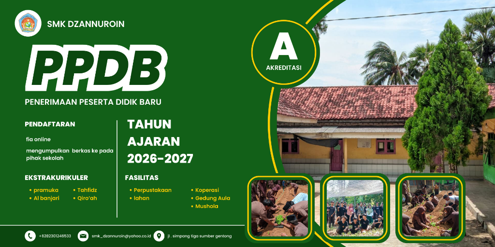

1. Pendaftaran Online
Isi formulir pendaftaran melalui website atau datang langsung ke sekolah.

Magang dan penyaluran kerja ke perusahan pangan terkemuka.
Laboratorium lengkap standar industri ("Mini Plant").
Tersedia beasiswa bagi siswa berprestasi akademik & non-akademik.
Isi formulir pendaftaran melalui website atau datang langsung ke sekolah.
Serahkan fotokopi rapor, KK, dan Akta Kelahiran ke panitia.
Mengikuti tes potensi akademik dan wawancara peminatan.
Hasil seleksi akan diumumkan melalui website dan papan pengumuman.
Siswa yang diterima melakukan daftar ulang dan pengukuran seragam.